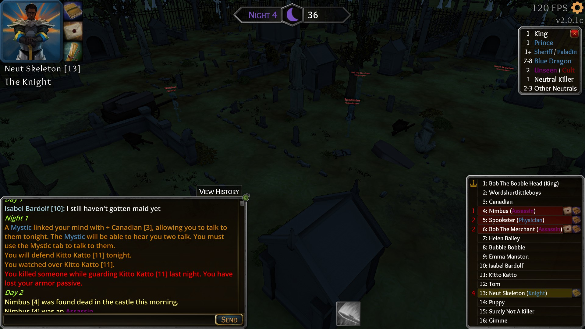

What happened? I was knight, killed assassin night 1 with defend. Killed second assassin N2 with defend, I did not die even though I lost my “armoured” passive
What was SUPPOSED to happen? I should have died when I killed the second assassin
Steps to reproduce: I got conduited with someone N1, but defended someone else and got my first kill. I got my second kill while defending the person I was conduited with N2. Dunno if that had any impact but I rather add in case that had some effect due to weird glitch.
For some reason, I can only add 1 photo and not my output log so I will attempt to add a second screenshot of N2 in a reply to this post
